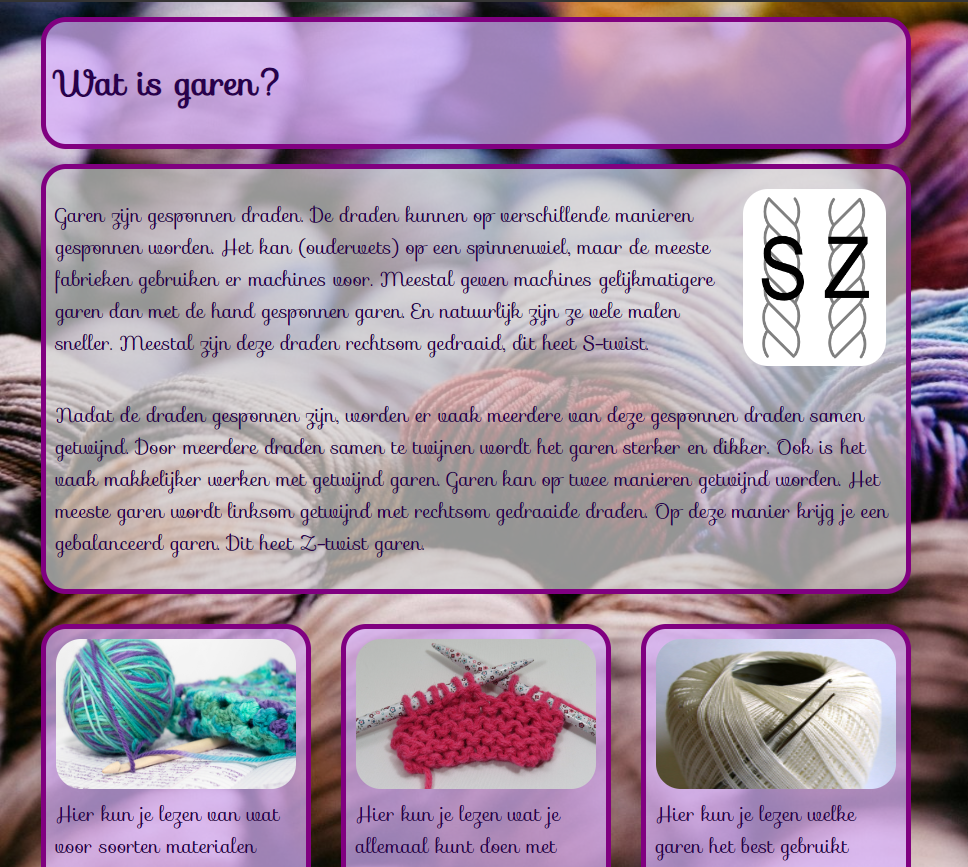
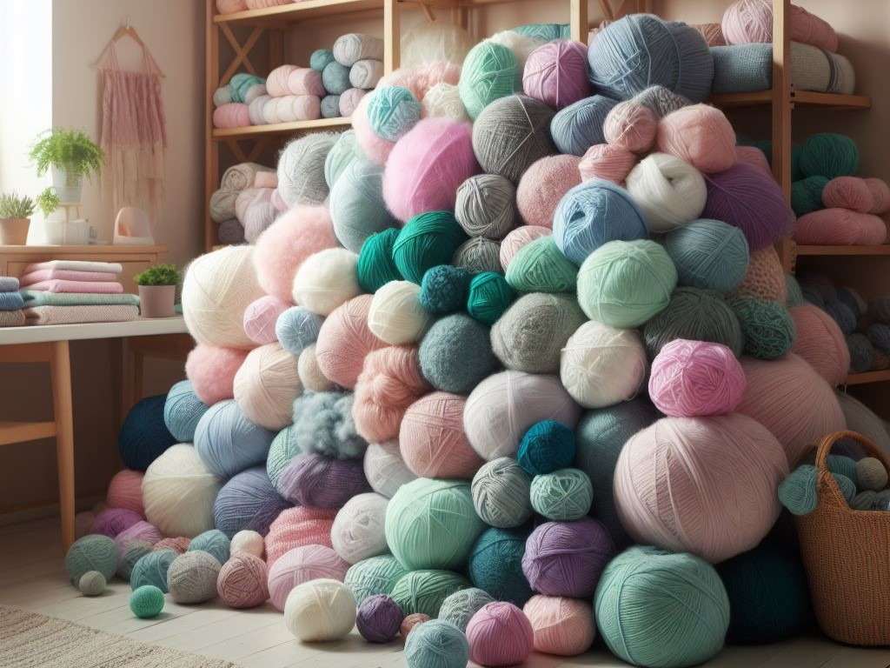

Resume
Education
- VU Amsterdam: BSc Farmaceutical Sciences
- VU Amsterdam: MSc Organic Chemistry
- VU Amsterdam: MSc Education (teacher chemistry)
Skills and certificats
- Python beginner, got a certificat from Udemy
-
Webdevelopment beginner, certificat from Winc Academy and doing a
course on Udemy.
- HTML
- CSS
- Javascript
- Office 365
Working experience
I have no relevant working experience yet. I have worked at a beach restaurant and some schools as a teacher and later as a technical support for chemistry lessons.
Websites that I have made before
- A website about yarn, using HTML and CSS.
- A website for the archery club, using Wordpress.
- Designed a website for a hotel using Canva.
- Datingsite for cats using bootstrap.
- Made this website with webflow. This one gives me a headache. Everything looks fine in the designer. I go on and publish, suddenly my pics are turned 90 degrees, or are extremely small.
My hobbies and interests
I love everything that has to do with yarn. Crochet, knitting, embroidery. But ofcourse my favorite hobby is collecting yarn. I definately have more yarn than I could use in one lifetime. I also have way to many crochet and knitting projects lying around. A different kind of project for every mood and concentration level. When I have a bit more energy, I will do some archery as well.
Contact
Mail: bianca@blassie.nl